AI & agent systems


AI AgentsMulti-Agent SystemsLLM ApplicationsRAGLangGraphPydanticAIOCRn8n
JAISON V J / AI ENGINEER
I enjoy building AI products that solve real problems. From helping researchers compare complex documents to supporting doctors with clinical trial discovery. I focus on creating tools that make complex work easier. I bring together agentic AI, data engineering, cloud platforms, and thoughtful product design to build experiences that people can trust and use every day.
01 / TECHNICAL SKILLS
A versatile toolkit shaped by real product work across AI, data, cloud, and delivery.
AI AgentsMulti-Agent SystemsLLM ApplicationsRAGLangGraphPydanticAIOCRn8n


PythonSQLPostgreSQLQdrantPineconepgvectorDatabricksData Lake


AWSAmazon BedrockAzure AIDockerCI/CDEC2LambdaAuthentication


FastAPIStreamlitDashReactTailwind CSSTableauPower BIGit
02 / EDUCATION
Academic rigor, curiosity, and a long-standing interest in building with technology.
Alva's Institute of Engineering and Technology, Mangalore
Alva's Pre-University College, Mangalore
D C Memorial Comp High School
02 / WHAT I BUILD
AI should earn its place in the real world. Here are systems built to move work forward.
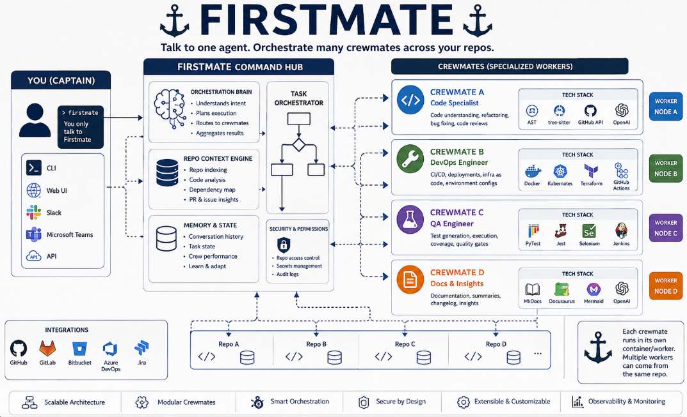
A custom multi-agent platform that gives software teams one place to orchestrate Codex and Claude Code agents. It coordinates repository context, development, testing, deployment, and pull request workflows while keeping human approval at the moments that matter.

An AI assistant built for doctors and research professionals who need to identify relevant clinical trials quickly. It turns a user’s requirements into structured agent workflows and returns focused recommendations for faster discovery and evaluation.

An OCR powered research workflow that reads pharmacopeias from different countries and compares a requested test across them. It helps research teams spot important differences and prepare more accurate, error free drafts.

An automated validation tool for Tableau and Power BI reports across UAT and production. Configured connectors retrieve report data and scheduled pipelines run repeatable checks so teams can catch inconsistencies before they reach business users.

Data processing and synchronization solutions built with Databricks and data lake patterns. The work focuses on moving reliable data through connected pipelines so it is ready for downstream use.

Automation tooling that validates cookies and supports consistent web testing workflows. It helps make routine checks repeatable and reduces the time spent manually verifying browser behaviour.
03 / RECOGNITION
A collection of delivery awards, courses, and hands-on certifications that shaped my path.
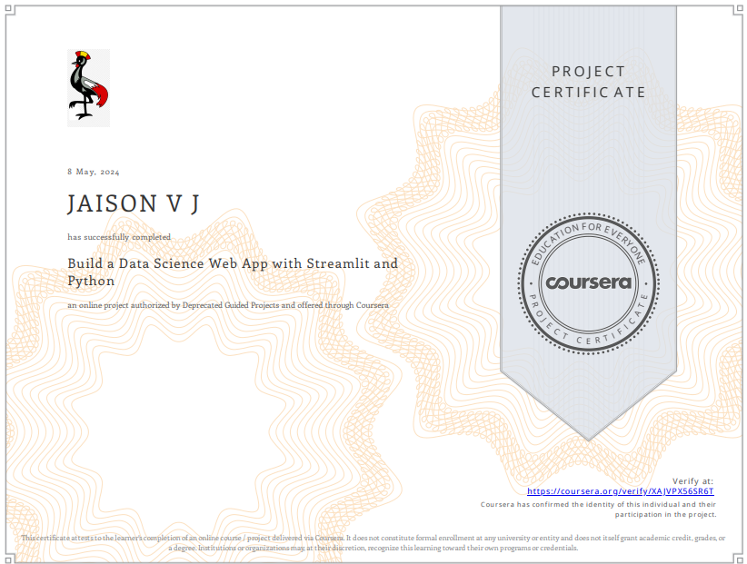
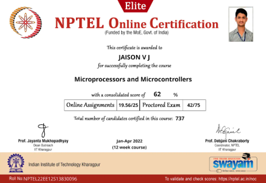
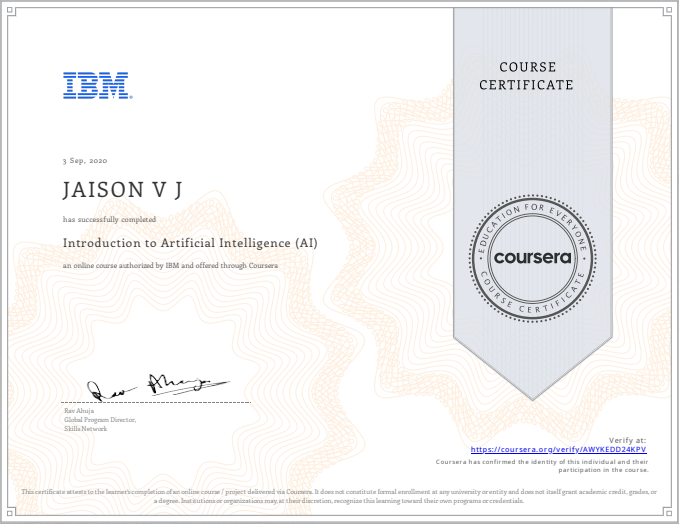
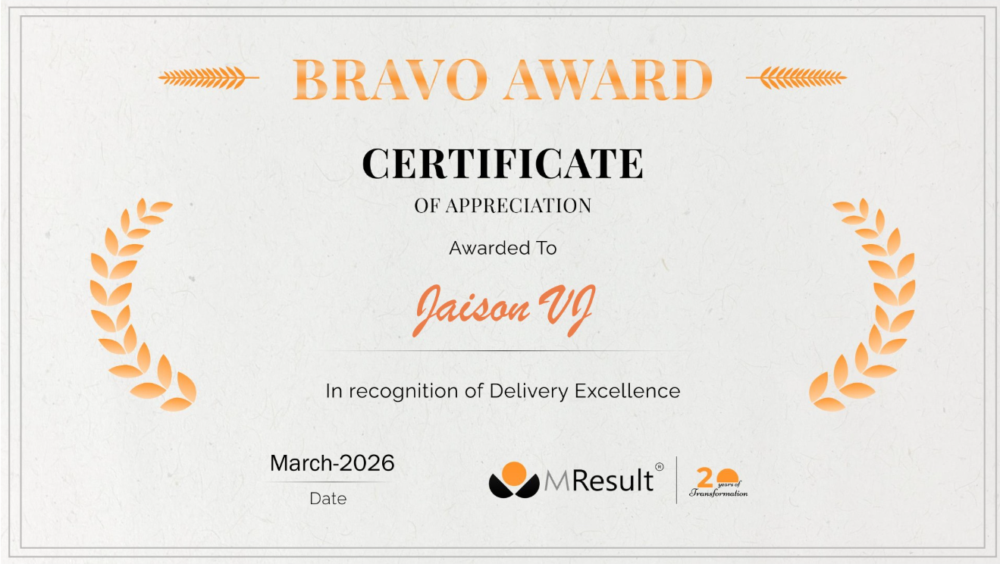
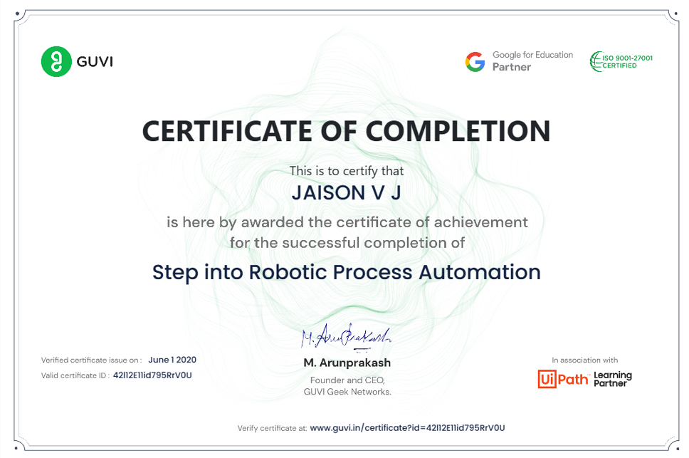
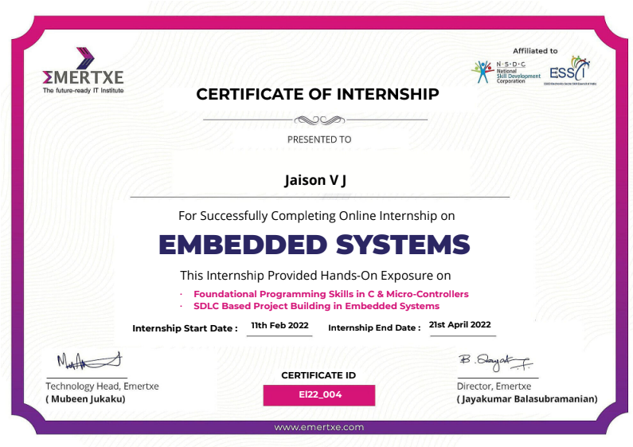
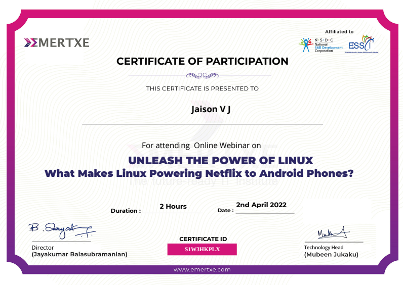
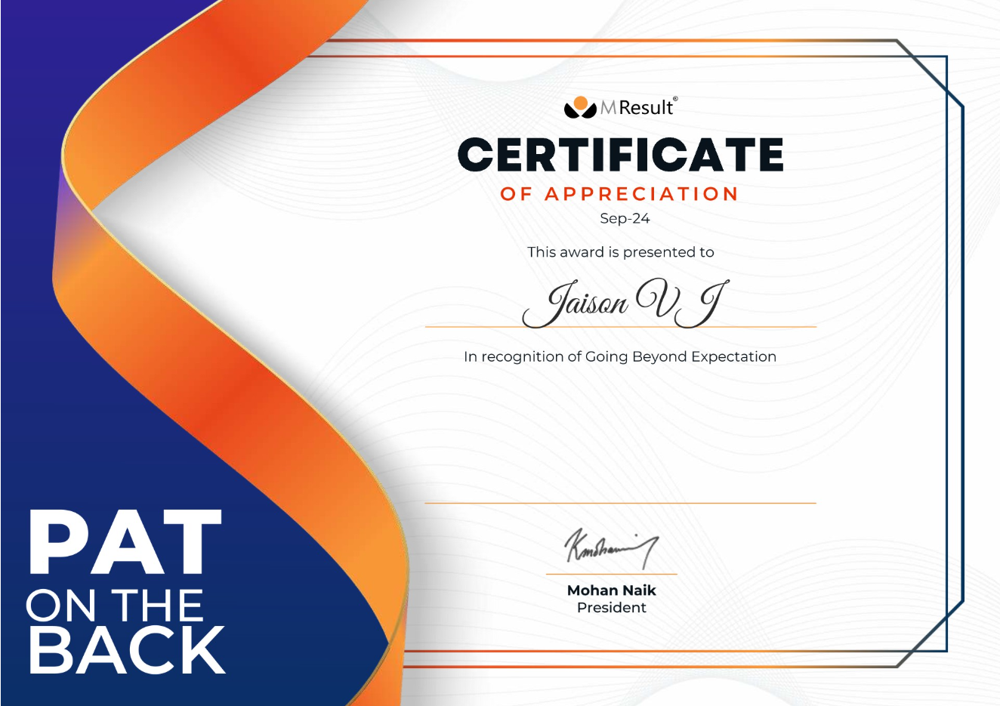
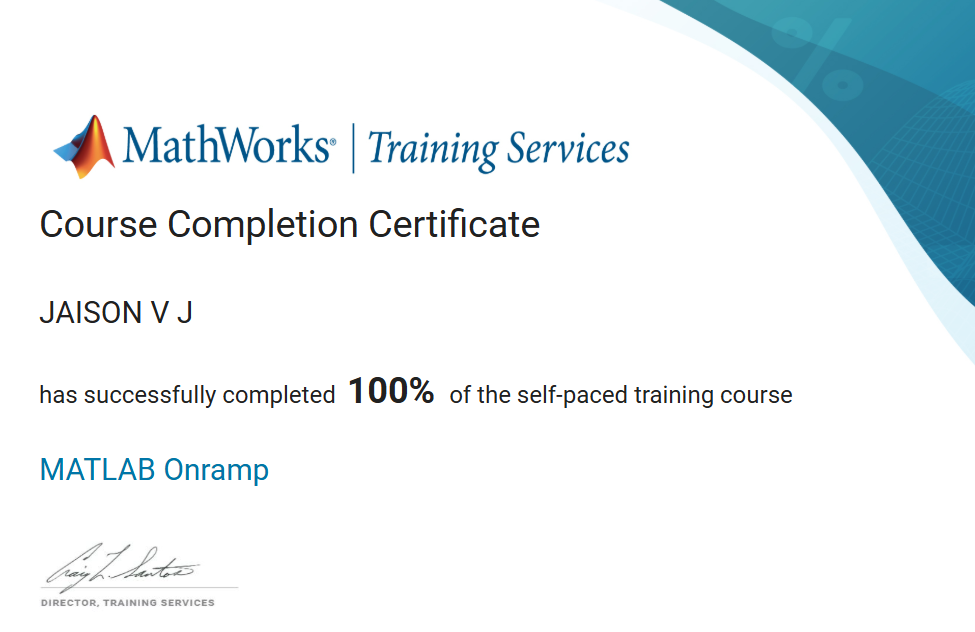
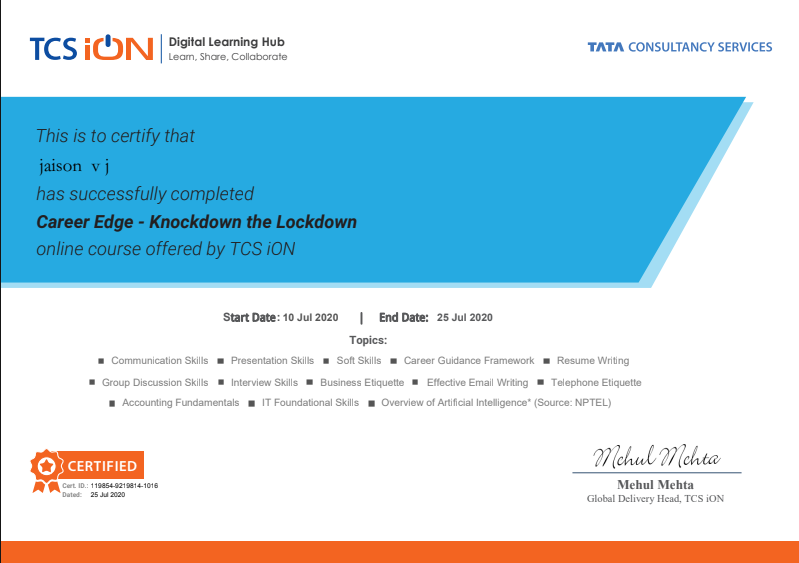
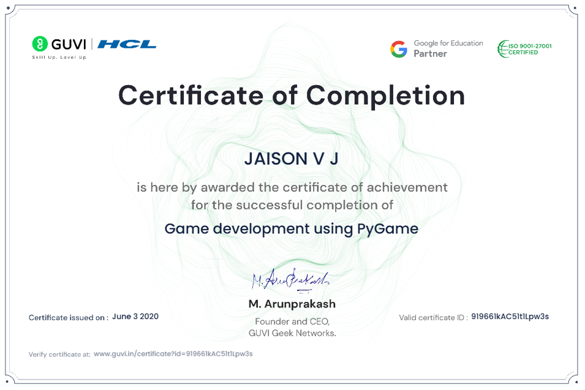
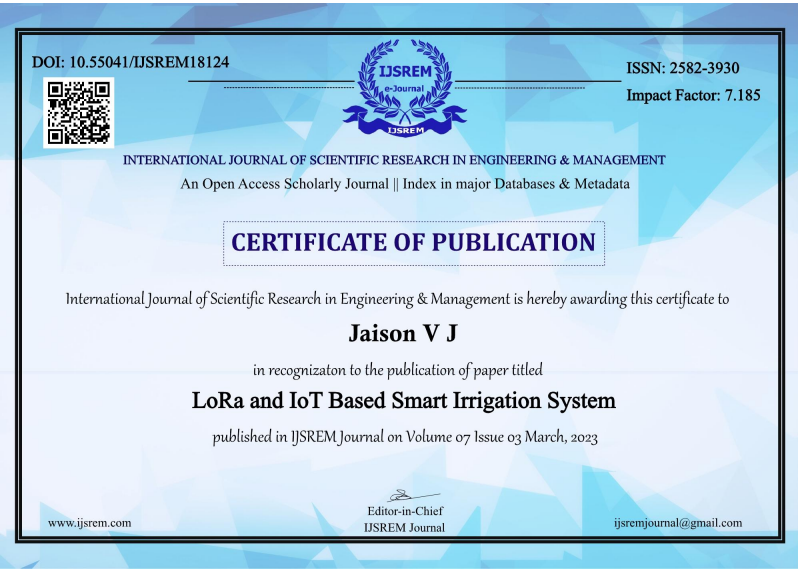
04 / PUBLICATION
IJSREM · VOL. 07, ISSUE 03 · MARCH 2023
An open-access research publication exploring an intelligent irrigation system using LoRa and IoT.
05 / GET IN TOUCH
Have an AI, data, or automation challenge in mind? Tell me about it - I’d love to hear the context.
jaisonvj053@gmail.com ↗